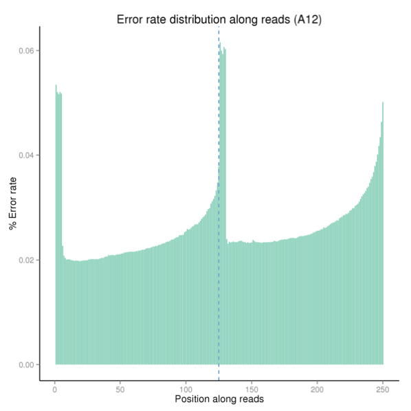
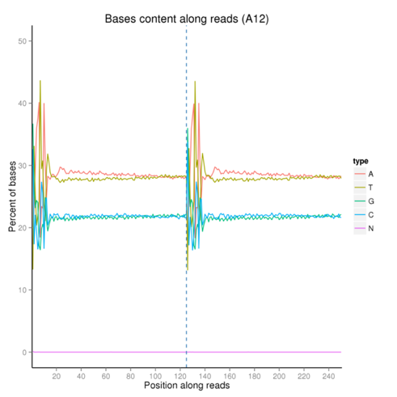
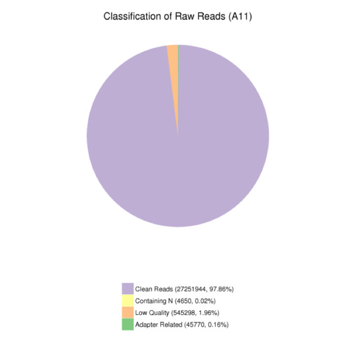

2. 测序结果质量评估
2.1 测序错误率分布检查
每个碱基测序错误率是通过测序Phred数值(Phred score, Qphred)通过公式（公式1 ：Qphred = -10log10(e)）转化得到，而Phred 数值是在碱基识别(Base Calling)过程中通过一种概率模型计算得到，这种模型可以准确地预测碱基判别的错误率。Phred分值，不正确的碱基识别率，碱基正确识别率以及Q-score的对应关系如下表1所显示：
表1 质量与错误率对照
| 测序错误率(E) |
碱基正确识别率 |
测序质量值(Q) |
| 5% |
90% |
13 |
| 1% |
99% |
20 |
| 0.1% |
99.9% |
30 |
| 0.01% |
99.99% |
40(max Q) |
测序错误率与碱基质量有关，受测序仪本身、测序试剂、样品等多个因素共同影响。对于RNA-seq技术，测序错误率分布具有两个特点：
(1)测序错误率随着测序序列(Sequenced Reads)长度的增加而升高。这是由测序过程中化学试剂的消耗导致的，为Illumina高通量测序平台所具有的特征。
(2)前6个碱基具有较高的测序错误率，此长度恰好为RNA-seq建库过程中反转录所需的随机引物长度。前6个碱基测序错误率较高是因为随机引物和RNA模版的不完全结合(Jiang et al.)。

图3.2.1 测序错误率分布图
2.2 碱基含量分布检查
通过碱基分布示意图，
图3.2.2，我们可以观测测序过程碱基均衡性，一般来说，因采用随机引物扩增但随机引物种类有限而导致reads的前10个碱基的比例不均衡，会出现波动是正常现象。在此波动之后的碱基互补配对原理GC及AT碱基对会分别均衡分布。

图3.2.2 碱基分布示意图
2.3 Adapter Content分析
图3.2.3 接头去除前(左图)后(右图)Adapter Content统计图
注：
1、Adapter Content反映序列reads在每个接头序列文库的立即百分比率；
2、正常情况，在完全去除接头情况下，序列reads在接头序列文库中占比是趋于零的，即Adapter Content图形中曲线贴近基线;
3、接头信息：3’adapter，5’-AGATCGGAAGAGCACACGTCT-3’；
5’adapter，5’-GTTCAGAGTTCTACAGTCCGACGATC-3；
4、这里只展示treat1样本去除接头前后的Adapter Content统计结果。
2.4 测序数据过滤
测序下机得到的原始序列，包含有带接头及低质量的reads，为了保证信息分析质量，必须对raw reads进行过滤，得到clean reads，后续分析都基于clean reads。数据的处理大致如下：
(1) 去除带接头(adapter)的reads；
(2) 去除N(N表示无法确定碱基信息)的比例大于10%的reads；
(3) 去除低质量reads(Qphred <= 20 的碱基数占整个 read 长度的 50％以上的 reads)。

图3.2.4 原始数据组成
注：不同颜色的比例分别代表不同成分比例
(1)Adapter related：因有接头，过滤掉的 reads数及其占总 raw reads数的比例。
(2)Containing N：因 N含量超过 10%，过滤掉的 reads数及其占总raw reads数的比例。
(3)Low quality：因低质量，过滤掉的reads数及其占总raw reads数的比例。
(4)Clean reads：最终得到的 clean reads 数及其占总 raw reads 数的比例。